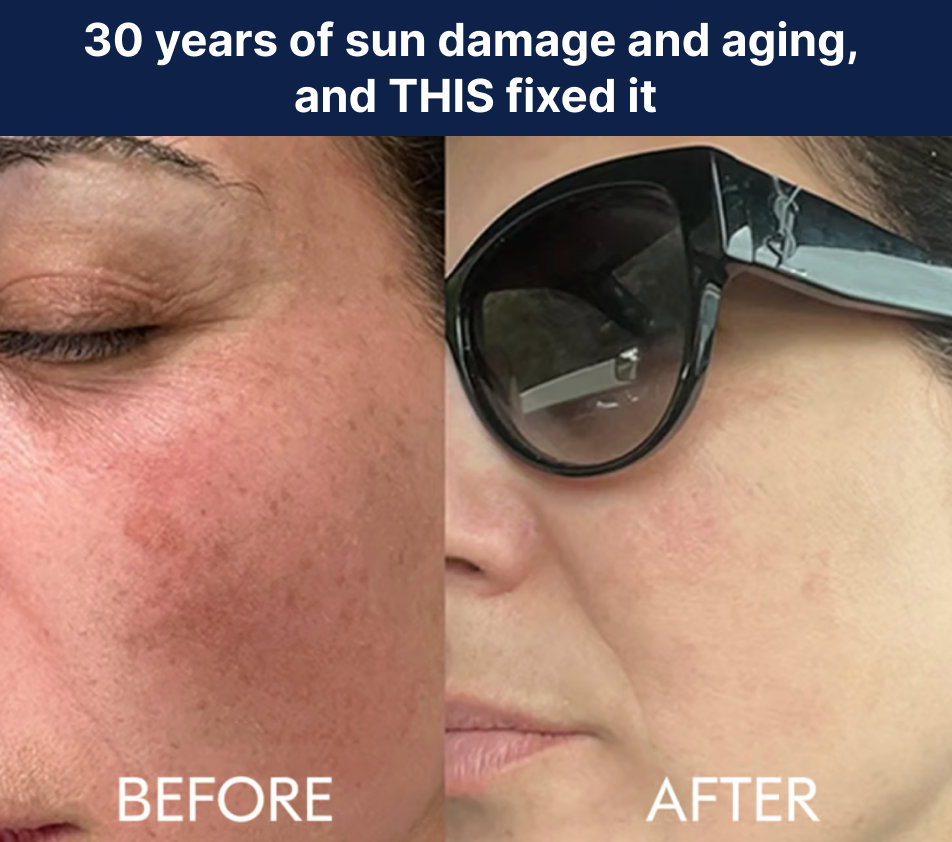
Adriana is 58. She lives in San Clemente. She exercises on the beach trails most mornings. She's a professor. She wears sunscreen — when she can. She's allergic to most of them.
Last year, she was diagnosed with melanoma on her face. Most of her cheek was removed.
"After you've had your cheek removed, you are not thinking of the sun as your friend," she says. "I want to do something. You just don't know how much incidental exposure you're going to get. I want to prepare for that."
Adriana's story is extreme. But the feeling isn't. If you've ever looked in the mirror and wondered whether what you're doing is actually enough — keep reading.
You wear sunscreen. You've always worn sunscreen.
You apply it in the morning. You keep a tube in your bag. You buy the good stuff — not the drugstore brand, the one your dermatologist actually recommended. You wear hats. You sit under the umbrella. You're not one of those people who bakes in the sun and hopes for the best.
You're careful. You're responsible. You do everything right.
And you're still getting sun damage.
Not the dramatic, lobster-red, peeling kind. The slow kind. The kind you don't notice until one morning you look in the mirror and see a dark spot that wasn't there last year. A patch of discoloration along your cheekbone. Texture on your chest that no serum seems to touch. A freckle your dermatologist wants to "keep an eye on."
You've been doing everything right. So how is this happening?
Here's what no one tells you.
Sunscreen protects the surface. But UV doesn't stop at the surface. It penetrates into your cells — damaging DNA, triggering oxidative stress, breaking down collagen from the inside. No topical can follow it there.
And that's assuming perfect application. You know the reality: you miss spots. You don't reapply every two hours. You're at brunch, then the park, then driving home — and that single application from the morning is long gone.
This isn't a flaw in your routine. It's a gap that sunscreen was never designed to close.
This Is What UV Does to Skin Over Time.
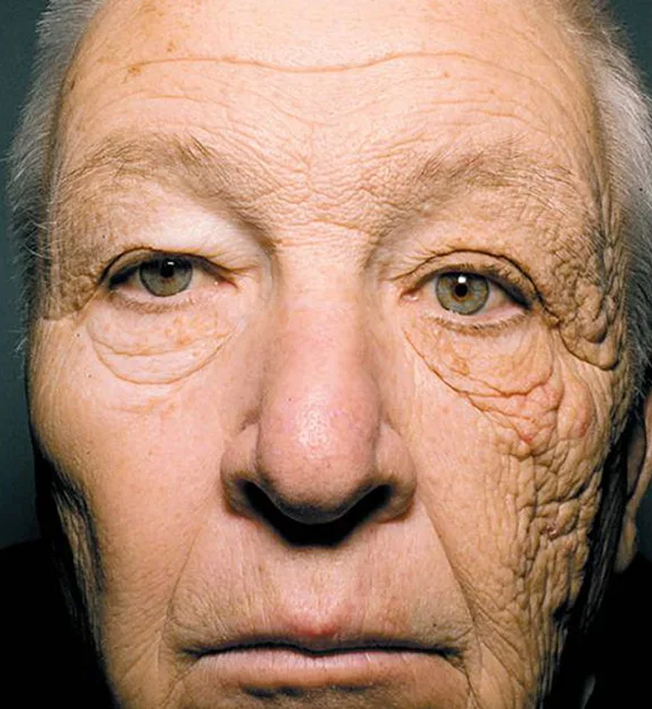
This case was published in the New England Journal of Medicine. A 69-year-old truck driver. 28 years of sun coming through the left side of his cab window. Same person. Same genetics. The only difference is UV exposure.
This is the same person. The only difference is which side of his face faced the window.
His left side — the driver's side — received decades of daily sun through the cab window. Not sunbathing. Not tanning. Just driving to work for 28 years.
His right side was shaded.
What you're looking at is what dermatologists call photoaging — and it accounts for up to 90% of visible skin aging. Not your genes. Not time. The sun.
The dark spots. The thinning. The texture. The broken capillaries. The loss of elasticity. That's not aging. That's UV damage accumulated over years of exposure that felt harmless at the time.
And here's what you can't see in this photo: beneath the surface, the cellular damage is even worse. DNA mutations. Depleted repair mechanisms. Collagen degradation that won't show up visually for another five to ten years.
This is what Dr. Soleymani sees in his patients every week. Not the dramatic burns. The slow, invisible accumulation that one day becomes a dark spot, a biopsy, a phone call.
The damage in this photo didn't happen in one afternoon. It happened over 20,000 afternoons. One day at a time. Most of them wearing sunscreen.
The damage from that gap is cumulative. It adds up silently, year after year, until it shows up as the spots, the pigmentation, the texture changes — and sometimes, as something much worse.
That gap is what kept one doctor up at night.

Dr. Teo Soleymani, MD — Stanford-trained Mohs micrographic surgeon. Former UCLA professor. Co-founder, Sun Powder.
Dr. Teo Soleymani is not a wellness influencer. He's not a supplement entrepreneur who saw a market opportunity. He's a Mohs micrographic surgeon — the specialist you get referred to when the skin cancer is on your face. Near your eye. On your lip. Somewhere that can't afford even a millimeter of error.
He trained at Stanford. He taught at UCLA. And over his career, he's removed more than 10,000 skin cancers.
Ten thousand.
That's ten thousand people who sat across from him and heard the word "cancer" — most of them for the first time. Ten thousand conversations that started with the same question:
"But I wore sunscreen. I was careful. How did this happen?"
"That question haunted me," Dr. Soleymani says. "Because they weren't lying. They really were careful. They really did wear sunscreen. And they still ended up in my chair."
He knew why. He'd known for years. The published research was clear: UV damage doesn't just happen on the surface. It happens inside the cell. It damages DNA. It triggers inflammatory cascades. It degrades the skin's repair mechanisms over time. Sunscreen addresses the outside. Nothing in most people's routine addresses the inside.
And he knew which ingredients could help. He'd been recommending them to his patients for over a decade:
- Nicotinamide — a vitamin B3 derivative shown in a landmark Phase 3 clinical trial to reduce non-melanoma skin cancers by 30% — and up to 54% in the highest-risk patients in a 2025 JAMA Dermatology study of 33,822 people. Published in the New England Journal of Medicine. Not funded by a supplement company — funded by the Australian government's National Health and Medical Research Council.
- Polypodium leucotomos — a tropical fern extract used for centuries in Central and South America to protect skin from the sun. Clinically shown to reduce UV-induced redness, decrease photodamage markers, and support the skin's natural defenses from within.
- Astaxanthin — a carotenoid antioxidant 6,000 times more potent than vitamin C at neutralizing the free radicals UV radiation generates inside your cells.
He'd tell patients to take all three. He'd write down the names. He'd specify the doses.
And then they'd go home, buy seven different bottles from six different brands, take the wrong amounts, get confused, and quit within two months.
"I was prescribing a protocol nobody could stick to. The science was there. The compliance was broken."
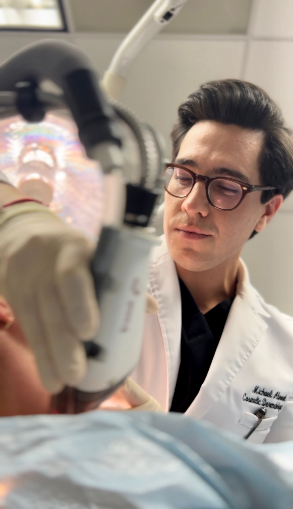
Dr. Michael Abrouk, MD — Harvard-trained cosmetic and laser dermatologist. Part of the lab that developed red light laser technology. Co-founder, Sun Powder.
Dr. Michael Abrouk was seeing the same problem from the other end.
Harvard-trained. Based in Miami — one of the most UV-intense cities in America. Specializing in cosmetic and laser dermatology. He was part of the research lab that developed red light laser technology, one of the most significant advances in modern skin treatment.
His days were filled with patients paying $500 to $5,000 per visit to correct sun damage that had already happened. IPL for dark spots. Laser resurfacing for texture. Chemical peels for pigmentation. Aerolase for melasma flare-ups.
They'd come back every six months for another round. And every time, the damage had progressed — because nothing in their daily routine was defending their skin between treatments.
"I kept thinking the same thing. We're really good at correcting damage. But we're doing almost nothing to prevent the next round. It's like mopping the floor while the faucet's still running."
They started talking. The conversations kept coming back to the same frustration: the ingredients exist. The research is published. The doses are known. But nobody has put them together in a way that patients will actually take every day.
So they did.
One formula. Every ingredient at the exact dose used in the published clinical research. No underdosed blends. No trending additions to pad the label. No proprietary blends hiding what's actually inside.
They designed it as a powder — not a pill — because the clinical doses are too large to fit in a capsule. To get the same amounts in pill form, you'd need 6 to 8 capsules a day. Nobody does that. A single scoop in any drink — water, coffee, a smoothie, your morning greens — takes 10 seconds. And you actually do it.
They called it Sun Powder.
Dr. Soleymani gives it to his own family.
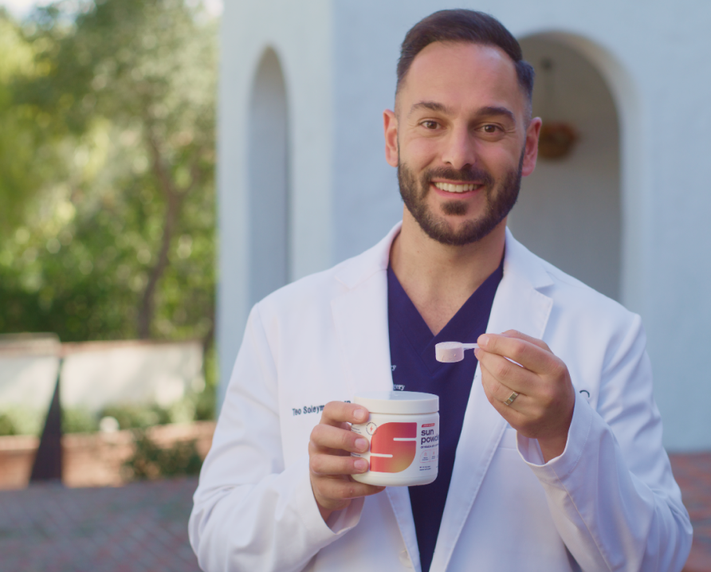
One daily scoop. Every ingredient at the clinical dose. Here's the proof.
See the Clinical Data →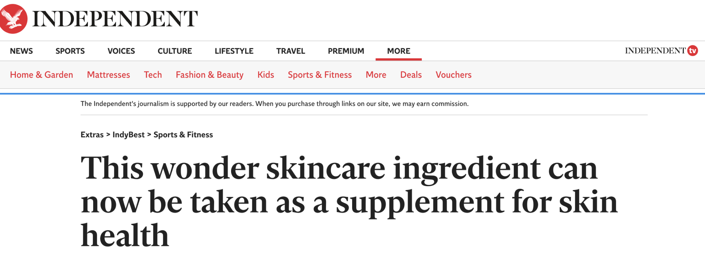
Mechanism of action
Sunscreen works on the surface.
Sun Powder works beneath it.
When UV radiation penetrates the skin barrier, it triggers a cascade of cellular damage — oxidative stress, DNA strand breaks, inflammatory signaling, collagen degradation. Topical sunscreen absorbs or reflects UV at the surface. It cannot intervene at the cellular level.
Sun Powder's formula is designed to support the skin's endogenous repair pathways — the biological processes that modulate oxidative stress, support DNA repair mechanisms, and help maintain cellular integrity after UV exposure.
Oxidative stress modulation
Nicotinamide and astaxanthin support the cell's antioxidant response to UV-induced free radical activity
DNA repair support
Nicotinamide replenishes NAD⁺, a cofactor required for PARP-mediated DNA repair after UV damage
Photoprotective complement
Designed to work alongside topical SPF — not replace it

The Clinical Trial
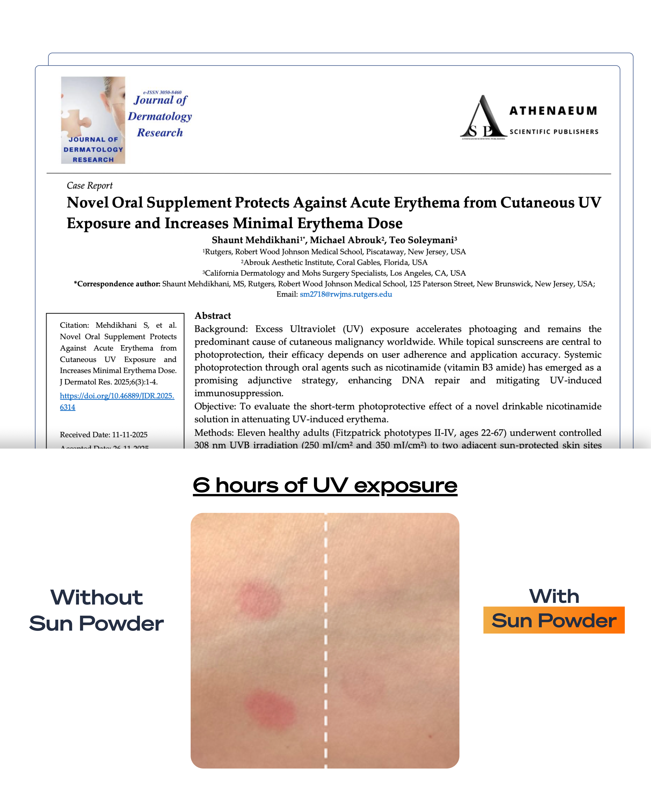
In December 2025, the results of a preliminary, multi-center clinical trial on Sun Powder's formula were published in the Journal of Dermatology Research.
The result: 100% of participants showed a measurable reduction in UV-induced skin redness.
In plain terms: participants could stay in the sun longer before their skin started to react. Sun Powder helped their skin tolerate UV exposure it previously couldn't.
Not 60%. Not 80%. Every single person in the trial responded.
This matters because in the supplement industry, most products have never been tested at all. The ones that have are rarely tested by independent labs. And the ones that are independently tested almost never achieve 100% response rates.
Sun Powder did.
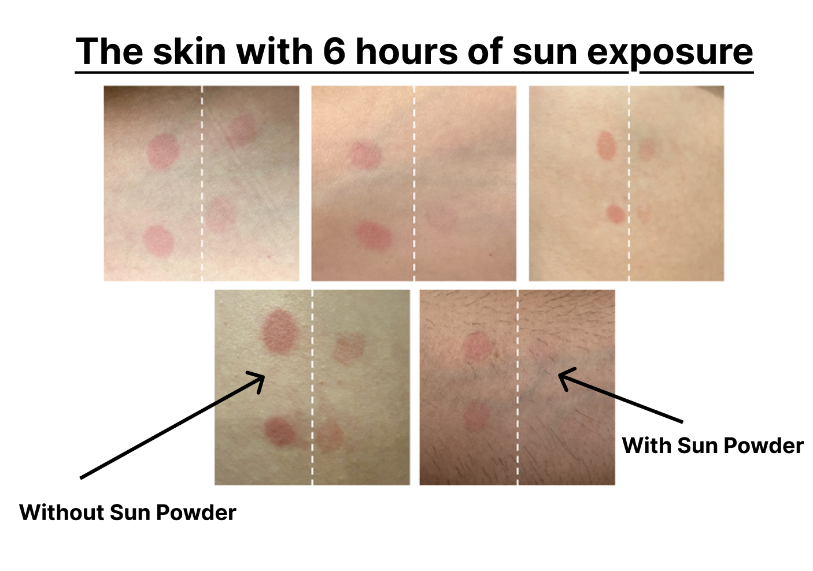
The NEJM Study That Changed How Dermatologists Think About Skin Protection
In 2015, a study was published that changed how dermatologists think about skin protection.
Researchers conducted a Phase 3 randomized, double-blind, placebo-controlled trial — the gold standard of clinical research. The subjects were patients who had already been diagnosed with non-melanoma skin cancers. High-risk patients. The ones who'd already had skin removed. The ones who were told it would probably come back.
Half received nicotinamide — a derivative of vitamin B3 — at 500mg twice daily. Half received a placebo.
After 12 months, the nicotinamide group saw a 30% reduction in new non-melanoma skin cancers. The study was published in the New England Journal of Medicine. Funded by the Australian government. Not a supplement company.
Dermatologists around the world took notice. Quietly, across thousands of practices, they started recommending nicotinamide to their highest-risk patients. Not as a trend. As a clinical intervention backed by Phase 3 data.
Then, in September 2025, a second study came out. 33,822 patients in the VA healthcare system. A decade of real-world data, published in JAMA Dermatology. Across the full population, nicotinamide was associated with a 14% reduction in skin cancer risk. Among patients who started it after their first diagnosis — the highest-risk group — that number rose to:
54% reduction in skin cancer risk — confirmed in 33,822 real-world patients. Published in JAMA Dermatology, 2025.
Two studies. Two different designs. A decade apart. The same conclusion.
Dr. Soleymani was one of the dermatologists paying attention.
"I started telling every high-risk patient to take nicotinamide. The data was that clear. But getting them to do it consistently — finding a quality brand, taking the right dose, remembering every day — that was the problem Sun Powder was built to solve."
Sun Powder contains 1,000mg of nicotinamide. The full clinical dose. One scoop.
The Fern Extract Dermatologists Have Been Quietly Recommending for a Decade
Long before clinical trials, indigenous communities across Central and South America used a fern called Polypodium leucotomos to protect their skin from intense equatorial sun.
Western medicine eventually caught up.
In clinical studies, Polypodium leucotomos extract was shown to reduce UV-induced redness, decrease markers of photodamage, and support the skin's internal defense mechanisms — not by blocking UV on the surface like sunscreen, but by working inside the cell to neutralize the oxidative stress and inflammation that UV triggers beneath the skin.
This is the same ingredient in Heliocare — the supplement dermatologists have quietly recommended to high-risk patients for over a decade. It's one of the only oral UV-defense ingredients with a serious clinical evidence base.
But Heliocare delivers Polypodium alone. One ingredient. One mechanism.
Sun Powder delivers Polypodium at 240mg — the full clinical dose — alongside nicotinamide, astaxanthin, vitamin C, glutathione, collagen peptides, hyaluronic acid, and inositol. Eight ingredients across three pathways: defense, repair, and restoration.
It's not a single ingredient in a capsule. It's the complete formula those ingredients were always meant to be part of.
What Customers Report After 30–90 Days
The UV defense was the reason they built it. But customers started noticing something else first.
The ingredients chosen for UV defense overlap heavily with the mechanisms that drive visible skin quality. Nicotinamide supports cellular repair. Polypodium reduces inflammation. Astaxanthin neutralizes free radicals. Vitamin C boosts collagen. Hyaluronic acid retains moisture. Collagen peptides support elasticity.
Defend your skin from UV damage at the cellular level, and the side effects are: better-looking skin.
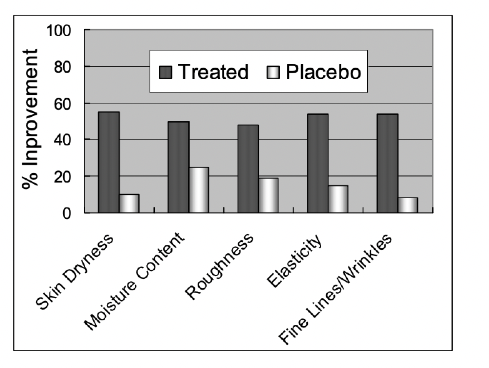
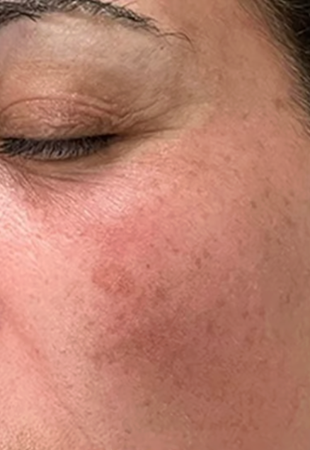
Before — Week 0
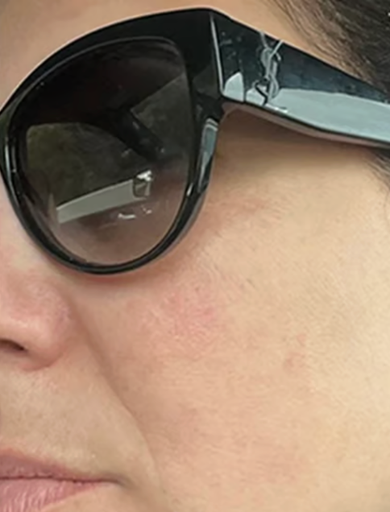
After — Week 12
"I stopped burning."
"I camp out for ten days every summer — completely covered in sunblock — still I usually get a burn. But this year since I've been drinking Sun Powder — no sun burn. I'm sold. I'll drink this forever."
"I was at a horse show for 6 weeks, out in the sun all day with no sunscreen on — and was not sunburned at all."
"I noticed with my husband, he tends to burn quite a bit, and he hasn't at all. I've been not using protection on my arms and I haven't burned at all."
"My spots are fading."
"I have noticed that certain moles and spots on the side of my face have gotten smaller. I've been using this product for 6 months."
"I have a bit of pigmentation from previous years, and I think that is diminishing right now."
"My skin just looks better."
"Noticed the difference on her chest. Nails and hair growing faster."
"In just a few weeks, I've noticed an improvement in my skin. Especially on my chest and shoulders."
"Her skin has improved. Great alternative to topical sunscreen. Much better solution plus additional benefits."
"Peace of mind."
"It's insurance against weird skin things. It's compensating for what we aren't doing. We aren't reapplying every two hours. This is easier than trying to reapply sunscreen."
"A magic elixir of keeping you safe in the sun if you forget sunscreen. Short and long-term sun defense that you take orally."
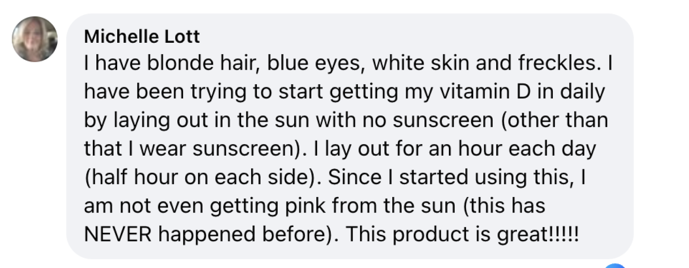
5,000+ people are already taking it daily.
If you're ready to see the formula, what's in it, and what to expect — this is the next step.
See the Full Formula →If You're Managing Melasma, Read This.
If you're managing melasma or hyperpigmentation, you already know the cycle.
Laser treatments. IPL. Chemical peels. Months of careful progress — undone by a single afternoon of unprotected sun exposure. You do everything right and one day at the park erases three months of treatment.
It's not that the treatments don't work. It's that they only correct the damage that's already happened. They do nothing to defend against the trigger — UV radiation hitting your skin and reigniting the pigmentation cascade from the inside.
Nicotinamide and Polypodium leucotomos — Sun Powder's two hero ingredients — are the same compounds dermatologists have recommended for over a decade to support skin prone to pigmentation issues. At clinical doses, taken daily, they help defend against the UV triggers that cause flare-ups in the first place.
"The cost to prevent melasma is much less than a laser treatment to get rid of a flare-up."
You're already spending thousands on correction. Sun Powder is $54 a month of prevention.
The Formula
Every ingredient at research-backed doses. Nothing underdosed. Nothing added for trends. Built by practicing dermatologists to support skin exposed to UV stress — not to hit a price target.
DEFEND
Block UV damage at the cellular level.
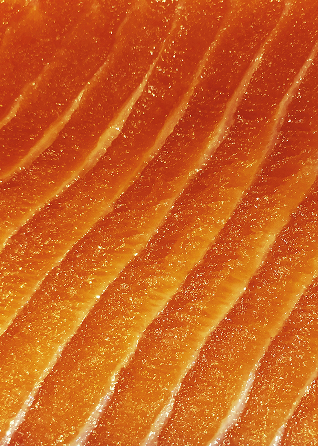
Nicotinamide 1,000mg
The most studied UV-defense compound in dermatology. Supports DNA repair after UV exposure. 30% reduction in non-melanoma skin cancers in a landmark Phase 3 NEJM trial. Up to 54% in high-risk patients per a 2025 JAMA Dermatology study.
Polypodium Leucotomos 240mg
Tropical fern extract clinically shown to reduce UV sensitivity and photodamage. The same hero ingredient in Heliocare — at the full dose and paired with the complete formula.
REPAIR
Neutralize free radicals and support recovery.
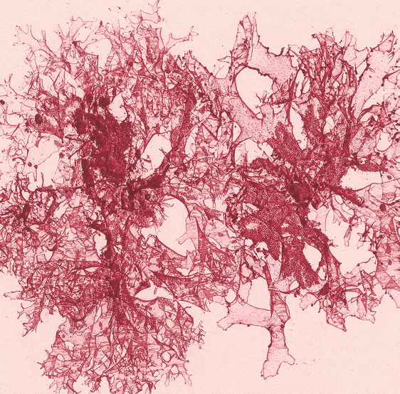
Astaxanthin 4mg
6,000 times more powerful than Vitamin C at neutralizing free radicals. Targets UV-induced oxidative stress specifically.
Vitamin C 250mg
Boosts collagen production. Brightens skin tone. Supports post-UV cellular repair.
L-Glutathione 50mg
The body's master antioxidant. Restores skin cells and supports detoxification of UV-related damage.
RESTORE
Rebuild what UV breaks down.
Bovine Collagen Peptides 100mg
Supports hydration, elasticity, and firmness. Customers report smoother skin and faster nail/hair growth within weeks.
Hyaluronic Acid 25mg
Retains moisture. Counteracts the dehydration UV exposure causes at the cellular level.

Inositol 1,000mg
Supports healthy cell turnover and hormonal balance. Particularly relevant during and after menopause.
Who Sun Powder Was Created For.
$1.80 a Day.
Most people spend hundreds — sometimes thousands — correcting sun damage after the fact. Laser treatments. Chemical peels. IPL sessions. Prescription creams. Procedures that fix what's already happened, then send you back out into the same UV exposure that caused it.
Very few people invest daily in defending their skin before the damage accumulates.
Sun Powder is $1.80 a day. Less than a coffee. A fraction of a single dermatology procedure. A rounding error in the skincare budget of anyone who takes their skin seriously.
We didn't build this to be the cheapest thing in your cabinet. We built it to be the most intentional.
Try Sun Powder Risk-Free
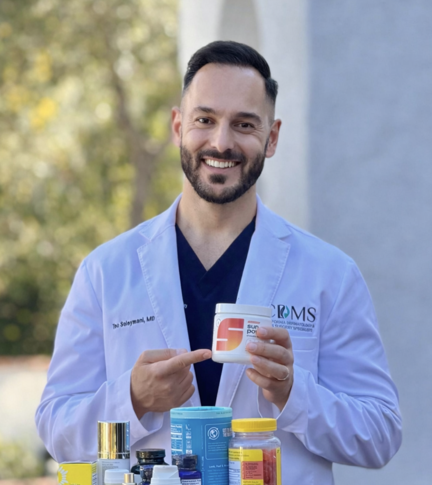
Due to the surge in orders following our clinical study publication, stock is limited.
Comments (21)
My derm has been telling me to take nicotinamide for years. I had no idea it was studied in the New England Journal of Medicine though. That's not some random supplement study. That's real.
OK but can we talk about how nobody ever explains the sunscreen reapplication thing honestly? I work outside. I'm not stopping every two hours to reapply. Not happening. This at least gives me something working in the background.
Skeptical at first honestly. My daughter heard about it on Huberman and bought it for me. I've had melasma for 12 years and nothing has kept it from flaring up in the summer. This is my first winter where it hasn't come back at ALL. Coincidence? Maybe. But I'm reordering.
I looked up both doctors. They're real. Like actually practicing, actually board certified, not just "doctor founded" the way every supplement brand says. The Stanford guy does Mohs surgery which is a very specific and serious thing. That made me trust it more than anything else on this page.
Does anyone else mix the mocha one into their coffee? Tastes like a slightly sweet latte. I was expecting it to be disgusting.
I'm a pharmacist. The doses here are actually at clinical levels which is rare for a consumer supplement. Most brands underdose everything and hide behind proprietary blends. This one lists every ingredient and every amount. That's how it should be done.
I spend $1200 every six months on IPL for sun spots on my chest. My aesthetician told me to take polypodium. I was already buying it separately. This has that plus nicotinamide plus collagen so I just consolidated everything into one scoop. The math made sense before I even finished reading this article.
Bought it after the Huberman episode and then forgot about it for a month lol. Finally started being consistent in January. My husband noticed my skin before I did. Now he steals my scoop every morning. Ordering him his own.
Interesting article but I want to know more about the clinical trial. 100% response rate sounds too good. How many participants? What was the control? I'd take this more seriously if they published the full methodology somewhere.
Fair question. The study was published in the Journal of Dermatology Research in December 2025. It's peer-reviewed and independently conducted. Sun Powder links to it on their site. Worth reading if you want the full protocol.
I'm 67. Two melanomas. Five basal cells. I take this every morning with my vitamins and I don't overthink it. The ingredients are backed by actual research and it costs less than my daily coffee. At my age the question isn't "does this definitely work." It's "why would I NOT take it."
I've been taking Heliocare for three years because my derm told me to. I had no idea there was a version with the full stack of ingredients at higher doses. Switching.
The part about the Australian government funding the nicotinamide study is what got me. That's not industry money. That's a national health agency deciding this was important enough to fund a Phase 3 trial. That means something.
I don't love the flavor honestly. The melon is very sweet. BUT I mix it into my AG1 and greens and I can't taste it at all. The unflavored option would probably be better for me next time. Still taking it daily though because my skin genuinely looks better than it has in years and that's the only thing I changed.
Sent this to my wife. She's had two skin cancer scares and spends a fortune on derm appointments and sunscreen and still stresses about it constantly. If this gives her peace of mind alone it's worth it.
The "mopping the floor while the faucet's still running" line from the Harvard doctor. That's exactly what my skincare routine has felt like for the last ten years. Correcting correcting correcting and never actually getting ahead of it.
Leave a comment